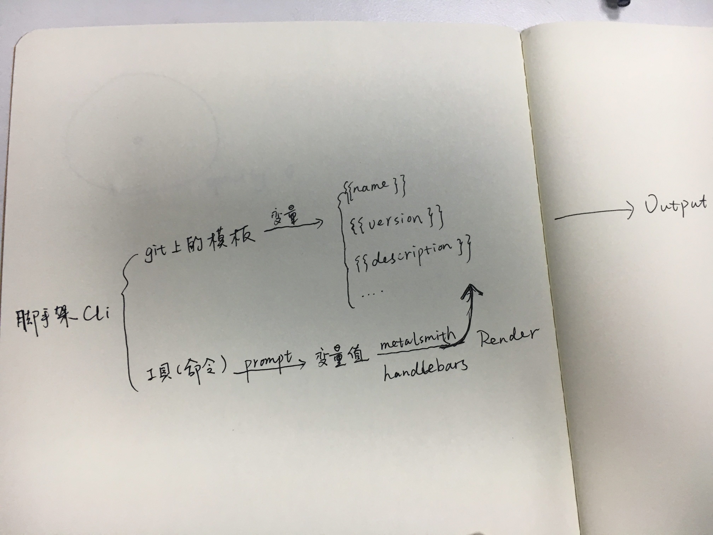

4. 项目初始化
1. 在根目录下建立templates.json文件并写入如下内容，用来存放模版信息
{"tpl":{}}
2. 使用node的子进程工具child_proccess.exec()下载模板，构建项目
在/command/init.js新建文件
'use strict'
const exec = require('child_process').exec
const co = require('co')
const prompt = require('co-prompt')
const chalk = require('chalk')
const templates = require('../templates')
module.exports = () => {
co(function *() {
// 处理用户输入
let projectName = yield prompt('Project name: ')
// git命令，远程拉取项目并自定义项目名
let gitUrl = 'https://github.com/Wobugaosuni/react-redux-app-base.git'
let cmdStr = `git clone ${gitUrl} ${projectName} && cd ${projectName} && rm -rf .git`
console.log(chalk.white('\n Start generating...'))
// 创建子进程
exec(cmdStr, (error, stdout, stderr) => {
if (error) {
console.log(error)
process.exit()
}
console.log(chalk.green('\n √ Generation completed!'))
console.log(`\n cd ${projectName} && npm install \n`)
process.exit()
})
})
}
more
这样一个项目的初始化工作就完成了，但远远还不够。
试想，从远端拉下来的模板，里面package.json的项目名name、版本号version、描述description，都是固定的。如果我想把这些作为变量，在用户初始化项目时就让用户输入填充进去模板呢？
有解决方案吗？

在这里使用上图的方案，我们使用了co-prompt来获取了用户的输入（变量值），然后利用metalsmith和handlebars，将这些输入的内容插入到模板中，完成了脚手架的初始化输出
使用metalsmith和handlebars处理模板
metalsmith是一个静态网站生成器
最大的特点就是In Metalsmith, all of the logic is handled by plugins. You simply chain them together.。本质上，metalsmith就是一个胶水框架，通过粘合各种插件完成生产工作
1. 使用handlebars给项目模板添加变量占位符
这时候就可以看到项目构建工具和项目模板分离的好处了，各司其职，代码逻辑结构清晰
用handlebars的语法对模板做一些调整，例如修改模板中的package.json
{
"name": "{{projectName}}",
"version": "2.1.0",
"description": "{{projectDescribe}}",
"main": "index.js",
"scripts": {
"start": "NODE_ENV=dev webpack-dev-server --progress --colors",
...
},
}
上面双大括号里的projectName, projectDescribe是handlebars语法的变量占位符，模板中的其他地方也做类似的替换
完成后记得提交(git push)对模板的更新
2. 脚手架利用metalsmith给模板插值
优化下/command/init.js
exec(cmdString, (error, stdout, stderr) => {
// 遇到错误，输入错误，结束进程
if (error) {
console.log(error)
process.exit()
}
// 元数据
const meta = {
projectName,
projectDescribe,
}
// 处理模板
return new Promise((resolve, reject) => {
Metalsmith(process.cwd())
.metadata(meta) // 要填充的元数据 <object>
.clean(false) // 是否清除
.source(projectName) // 源模板
.destination(projectName) // 拷贝到所在的目录
.use((files, metalsmith, done) => { // 模板变量处理
Object.keys(files).filter(filename => filename === 'package.json').forEach(fileName => {
const content = files[fileName].contents.toString()
files[fileName].contents = new Buffer(Handlebars.compile(content)(metaObject))
})
done()
})
.build(err => { // 编译
err ? reject(err) : resolve()
})
}).then(() => {
// 成功构建
console.log(chalk.green('\n √ Generation completed!'))
console.log(`\n cd ${projectName} && npm install \n`)
process.exit()
})
})
})
至此，一个带交互的，可动态给模板插值的脚手架基本完成了